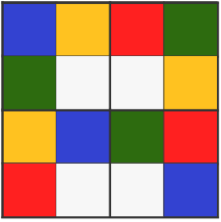

<div id="menu">
    Tábla méret:
    <input type="radio" id="small" name="sizeOfTable" value="3" checked>3X3<br>
    <input type="radio" id="large" name="sizeOfTable" value="4">4X4<br>
    Nehézség:
    <input type="radio" id="easy" name="difficulty" value="easy" checked>Easy<br>
    <input type="radio" id="hard" name="difficulty" value="hard">Hard<br>

    <input id="start" type="button" value="Start" onclick="start($('input[name=sizeOfTable]:checked').val(), $('input[name=difficulty]:checked').val())">
    
</div>